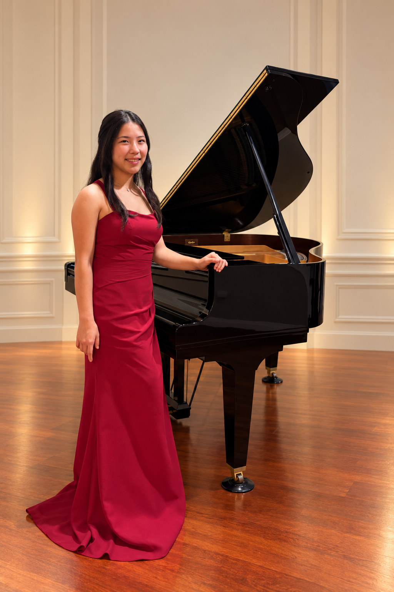

ABOUT
C H A R A C T E R

Music has been part of my life for a long time, but it is only one part of who I am. I also care about journalism, service, research, and the people I get to work with.
Each experience has taught me something different, and I hope to keep learning from the people and communities around me.
I hope to keep learning and use what I learn in ways that can help others.